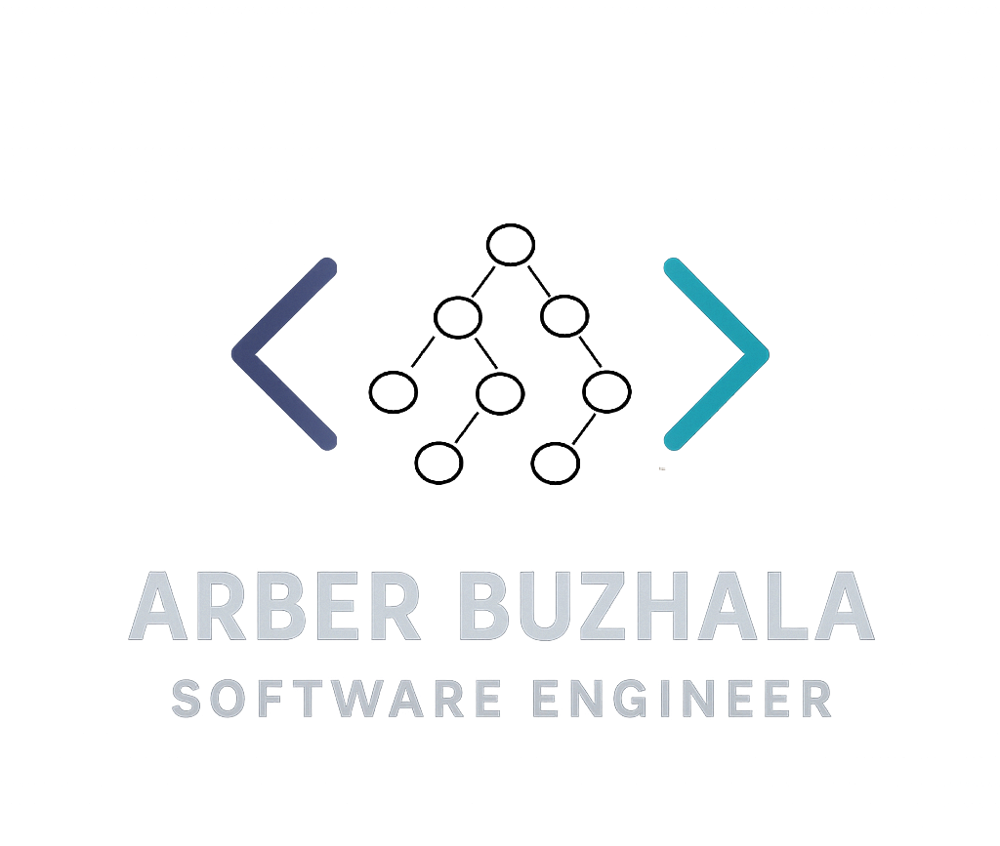

Technologies: C, STM32 Nucleo F401RE, arm-none-eabi toolchain, Linux
Developed low-level firmware for an STM32 Nucleo F401RE, configuring GPIO, RCC clocks, and peripheral registers directly in C. Controlled both the onboard and an external LED, and resolved hardware and toolchain issues during development.
Technologies: Kotlin, Jetpack Compose, Android Studio
Built and shipped a full-featured matrix calculator app implementing custom linear algebra algorithms from scratch. Features eigenvalue computation, determinants, matrix inverses, and graph isomorphism checking, all wrapped in a clean Compose UI.
Key Features: Custom linear algebra engine, Jetpack Compose declarative UI, state management, published and available on Google Play.
Technologies: Assembly Language, Microcontrollers, Breadboard Electronics
Worked from first principles up — designed and built SR latches, oscillators, and half-adders using discrete transistors on breadboards, then implemented a 4-bit full adder using ICs. Later programmed a DragonBoard microcontroller to drive an RC car autonomously using ultrasonic sensor readings.
Key Features: Transistor-level digital logic, IC integration, assembly language programming, sensor-driven autonomous control.
Technologies: SQL, Database Design, DBMS Principles
Course: Design/Implementation of DBMS (CIS 422 - Fall 2025)
Designed and implemented a relational database system with focus on normalization, query optimization, and efficient data retrieval.
Key Features: Normalized schema design, complex SQL queries with joins and subqueries, stored procedures, and transaction management.
Technologies: Java, Object-Oriented Programming
Course: Advanced Java Programming (Monroe CC - Fall 2024)
Built multiple Java applications covering OOP principles, GUI development, and design patterns. Projects included a matrix calculator, quadratic formula solver, derivative/antiderivative solver, pair-matching tool, and a GUI-based database interface.
Key Features: Object-oriented design, event-driven programming, file I/O, and GUI development.
Technologies: Python
Course: Introduction to Computing (Monroe CC - Fall 2023)
First programming projects — built Wordle, Hangman, and QuickDraw (a Keno-style number game) in Python, which established the foundation for logic, loops, and user interaction.
Key Features: Game logic, user input handling, algorithmic problem solving, file handling.